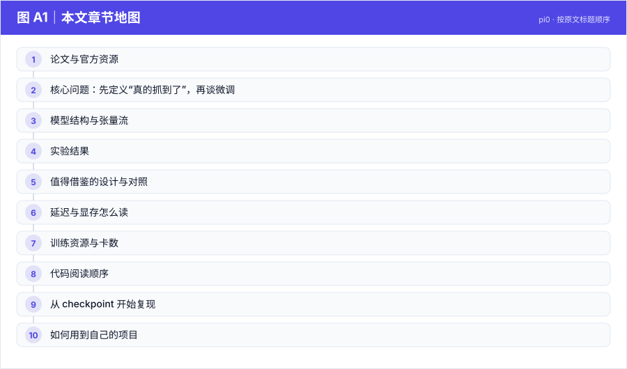
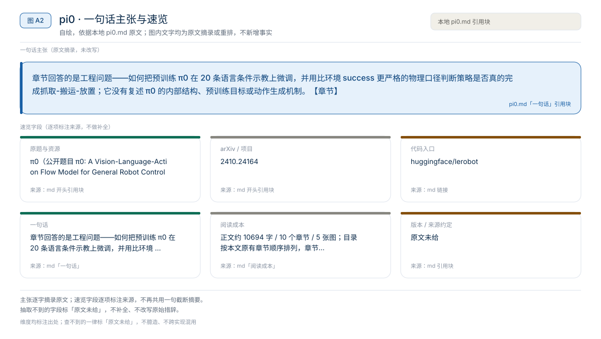
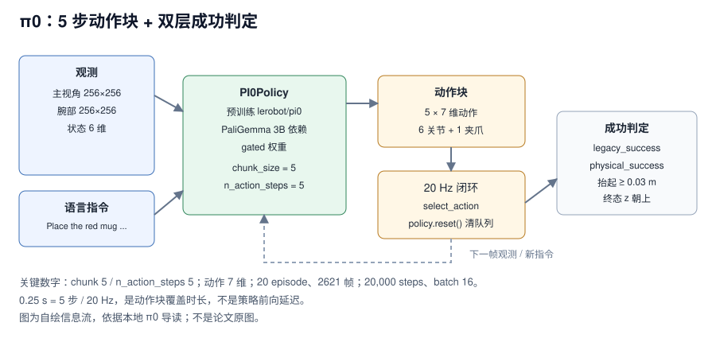
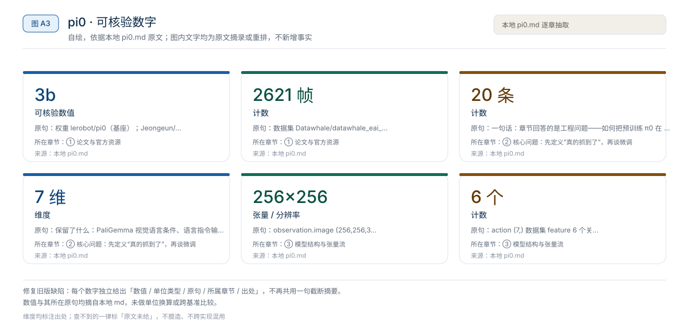
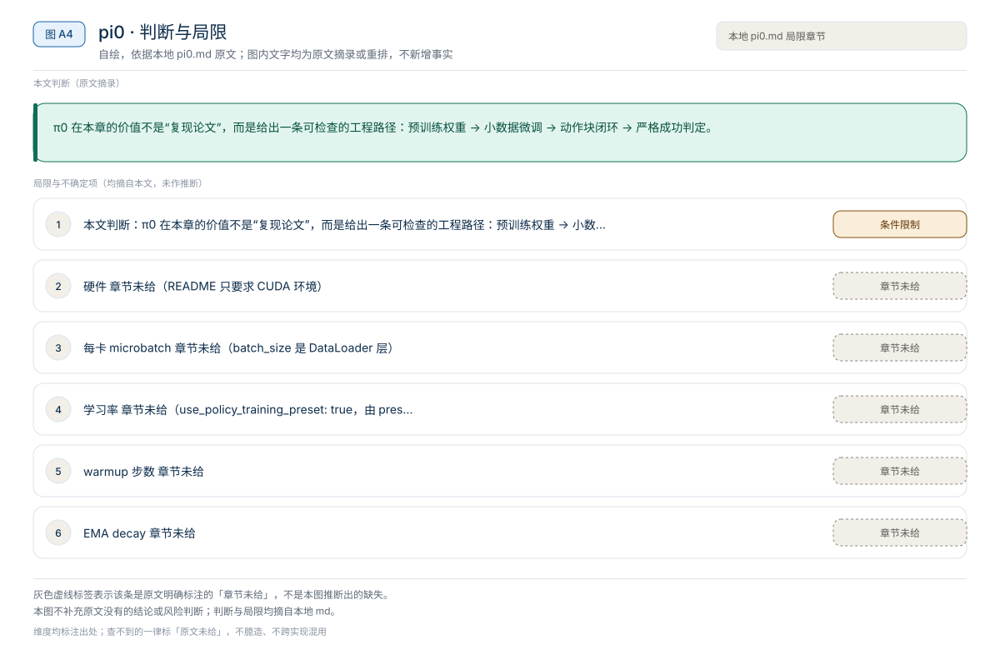

【VLA 精读 · 动作表示】ACT：CVAE + 动作分块，51.55M 参数也能做抓取
在“只有几十条示教、没有语言输入、单卡可训”的约束下，ACT 用 10 步动作块降低决策频率，并在训练时用 CVAE 潜变量给动作生成引入随机隐变量，而不是只做确定性回归。【章节】
动作表示
原题与资源：π0（公开题目 π0: A Vision-Language-Action Flow Model for General Robot Control，未在本地章节核验） · arXiv:2410.24164 · 代码
一句话：章节回答的是工程问题——如何把预训练 π0 在 20 条语言条件示教上微调，并用比环境 success 更严格的物理口径判断策略是否真的完成抓取-搬运-放置；它没有复述 π0 的内部结构、预训练目标或动作生成机制。【章节】
阅读成本：正文约 10694 字 / 10 个章节 / 5 张图；目录按本文原有章节顺序排列，章节内容未改动。
目录（点击跳到对应章节）：

图 A1：本文章节地图（节点即原文 h2 标题）。自绘，依据本文，不新增事实。
本章的 π0 不是论文复述，而是一条可执行的工程链路：用 LeRobot 固定版 10b7b353 的 PI0Policy，从 lerobot/pi0 起微调，输入 256×256 主视角 + 腕部图像、6 维状态和语言指令，输出 7 维动作，chunk_size=5、n_action_steps=5。教学数据只有 20 个 episode、2621 帧、红/蓝杯两个任务；训练配置是 20,000 steps、batch 16、每 10,000 步存一次。部署按 20 Hz 调 select_action，一个 chunk 覆盖约 0.25 秒。章节没有给 π0 的成功率、参数量、显存或延迟，这些缺口在文中逐项标注。
来源约定：本文事实只取自本仓库 04 章 README、09 策略诊断与物理成功评估，以及 README 指定为权威配置的pi0_datawhale_eai.yaml、训练脚本train_model.py与部署 Notebook7.pi0.ipynb；没有用模型记忆补写论文方法。
标注约定：【章节】指本地章节给出的配置、命令或结论；【公开】指公开入口，未在本地章节核验。
版本：LeRobot 固定10b7b3532543b4adfb65760f02a49b4c537afde7（章节给出）；论文版本与日期章节未给；查阅日期 2026-11-01。
| 资源 | 入口 | 阅读用途 |
|---|---|---|
| 论文 | arXiv:2410.24164* | π0 原始方法与预训练配方（公开入口，未在本地章节核验） |
| 源码 | huggingface/lerobot，固定 10b7b353；本章 train_model.py、check_training_configs.py | 策略接口、训练循环、YAML 解析与 checkpoint |
| 权重 | lerobot/pi0（基座）；Jeongeun/omy_pnp_pi0（微调）；google/paligemma-3b-pt-224（gated 依赖） | 训练起点、部署加载、权限检查 |
| 项目页 | 章节未给 | — |
| 数据集 | Datawhale/datawhale_eai_pnp_language（20 episodes / 2621 帧 / 2 任务）；Jeongeun/omy_pnp_language | 语言条件微调与红/蓝杯评测 |
论文题目：π0（公开题目 π0: A Vision-Language-Action Flow Model for General Robot Control，未在本地章节核验）；arXiv：2410.24164*；代码 commit：10b7b353；查阅日期：2026-11-01。
* 表示公开入口未在本地章节核验；表中的 HF 权重与数据集链接由章节给出的 repo ID 补全为 URL，章节没有给项目页。
版本提示：本章是 LeRobot 教程与诊断笔记，不是论文的官方复现记录。章节没有给 π0 的层数、参数量、动作生成模块结构、训练目标或预训练数据；本文只记录“接口、配置、命令、评估口径”，不把教程数字当成论文数字。

图 A2：一句话主张与速览字段。自绘，依据本文，不新增事实。
一句话：章节回答的是工程问题——如何把预训练 π0 在 20 条语言条件示教上微调，并用比环境 success 更严格的物理口径判断策略是否真的完成抓取-搬运-放置；它没有复述 π0 的内部结构、预训练目标或动作生成机制。【章节】

图 1：π0 的观测、语言、5 步动作块与双层成功判定。自绘，依据本地导读；不是论文原图。
对比主流路径：预训练 π0 直接部署 → 本章的“20 episode 单任务微调 + 严格成功判定”。
success 会把“挤到盘边”“倒杯”判成成功，必须另设 physical_success。success，很容易把无效策略当成已复现。
图 A3：本文可核验的数字摘录。自绘，依据本文，不新增事实。
一个具体任务走一遍 · 本文形状与接口速查（以下均摘自原文，未作推算）：
observation.image ｜ (256,256,3) ｜ 数据集 featureobservation.wrist_image ｜ (256,256,3) ｜ 数据集 featureobservation.state ｜ (6,) ｜ 数据集 featureaction ｜ (7,) ｜ 数据集 feature| 字段 | 形状 | 来源 | 说明 |
|---|---|---|---|
observation.image | (256,256,3) | 数据集 feature | 主视角；部署时 resize 到 256×256 |
observation.wrist_image | (256,256,3) | 数据集 feature | 腕部视角；同样 resize |
observation.state | (6,) | 数据集 feature | x, y, z, roll, pitch, yaw |
action | (7,) | 数据集 feature | 6 个关节角 + 1 个夹爪 |
obj_init | (6,) | 数据集 feature | 仅物体初始位置，训练不使用 |
task | list[str]，长度 B | 部署时传入 | 语言指令，例如 Place the red mug on the plate. |
| 策略输出 | (chunk_size, 7) = (5,7) | PI0Config | 一次前向出 5 步，执行 5 步 |
数据采集是 20 fps，图像 256×256；训练数据是 LeRobot v2.1，包含 20 个 episode、2621 帧、红杯与蓝杯两个任务。【章节】
章节只给到依赖关系，没有给 π0 的内部结构：smoke test 检查 Hugging Face token 能访问 google/paligemma-3b-pt-224 与 lerobot/pi0，说明策略构建依赖 PaliGemma 权重；PI0Policy 与 PI0Config 来自 LeRobot 的 lerobot.common.policies.pi0。层数、hidden size、动作生成模块、训练时是否冻结视觉塔，章节均未给，需按固定 commit 读代码确认。【章节】
| 接口 | 章节调用 | 作用 |
|---|---|---|
PI0Config | PI0Config(input_features, output_features, chunk_size=5, n_action_steps=5) | 绑定输入/输出特征与动作块长度 |
PI0Policy.from_pretrained | PI0Policy.from_pretrained(path, dataset_stats=dataset_metadata.stats) | 加载权重；同时传入数据集统计量用于归一化 |
policy.reset() | 每个 episode 开始前 | 清空动作队列/内部状态 |
policy.select_action(data) | 20 Hz 循环内 | 输入观测 dict，返回 (B,7) 动作 |
dataset_stats | LeRobotDatasetMetadata(...).stats | 动作/状态归一化与反归一化 |
部署 Notebook 的输入 dict 是 observation.state、observation.image、observation.wrist_image、task 四项；动作取 action[0,:7] 后送入 joint_angle 环境。归一化统计不在代码里手写，而是由 dataset_stats 显式传入，这是换数据集时最容易漏的一项。【章节】
语言条件不是可选装饰：数据采集阶段就分成红杯、蓝杯两个任务，训练与评测都用固定指令；09 章要求同一批 seeds 分别跑红杯和蓝杯，才能判断模型是在学任务，还是只偏向某种颜色或初始位姿。【章节】
动作块长度由 chunk_size=5 与 n_action_steps=5 决定：一次前向预测 5 步，部署时连续执行 5 步，再取下一块。章节没有给动作表示（绝对关节角/增量）、动作范围、是否使用 action ensembling，这些要在 PI0Policy 与 YAML 里核对；pi0_datawhale_eai.yaml 只显式写了 type: pi0、chunk_size: 5、n_action_steps: 5、device: cuda。
train_model.py 的路径是：make_dataset(cfg) → make_policy(cfg, ds_meta=dataset.meta) → make_optimizer_and_scheduler(cfg, policy) → 每个 step 取 batch、前向算 loss、AMP 反传、梯度裁剪、optimizer step、按 save_freq 存 checkpoint。非 resume 时脚本强制把 cfg.policy.pretrained_path 设为 lerobot/pi0，所以“从零训练 π0”不是本章支持的路径。【章节】
章节把成功拆成环境原始条件和物理条件，推荐报告时优先用 physical_success，并保留 legacy_success 作对照；两者不一致时先看视频。
| 判定层 | 判定条件 | 回答的问题 | 章节建议 |
|---|---|---|---|
legacy_success | 环境原始 check_success() | 是否满足几何终止条件 | 保留作对照 |
physical_success | 原始成功为真；目标杯相对初始高度抬起 ≥ 0.03 m；抬起持续若干控制 tick；终态杯子局部 z 轴大致朝上 | 是否真的完成抓取-搬运-放置 | 报告优先使用 |
“若干控制 tick”的具体数量章节未给，只给了“避免瞬间碰撞误判”这个目的；实现时要自己定阈值并固定下来，否则不同实验不可比。
| 失败类型 | 常见现象 | 优先检查 |
|---|---|---|
| 未接触 | 夹爪停在杯子旁边或盘子附近 | 图像条件、初始位姿、语言指令、闭环偏移 |
| 抬起不足 | 碰到杯子但没有稳定夹住 | gripper 动作、接近轨迹、动作归一化 |
| 放置偏 | 杯子被抬起但落点远离盘子 | chunk 长度、末端阶段示教、DAgger 纠偏 |
| 倒杯 | 杯子到盘附近但姿态不直立 | release 时序、放置高度、终态稳定性 |
章节没有给 π0 在红杯/蓝杯上的成功率，也没有给 rollout 统计；README 只展示部署 gif 与 W&B 截图。09 章的 pi0 smoke test 只证明四件事：HF token 能访问 google/paligemma-3b-pt-224 与 lerobot/pi0；demo_data_language 能被 LeRobot 加载；policy 能构造并完成 1 step 训练；checkpoint 保存链路正常。它不证明收敛，也不代表最终成功率。【章节】
读法：不要把 smoke test 的“1 step 能跑”写成“π0 已复现”；也不要把 README 的 rollout gif 当成成功率。要得到可报告数字，必须按 §4.1 的口径跑固定 seeds，并同时保留 legacy_success 对照。
来源：本地 09 章“物理成功的判定口径”“pi_0 迁移前的 smoke test”。
章节没有消融表，但给了四组可执行的对照，收益方向是章节结论，不是作者数字。
WeightedRandomSampler 对目标任务 frame 加权，而不是复制 parquet episode。这条结论适合做成“数据增强是否破坏原分布”的课堂讨论。0–9、--max-action-steps 600；脚本表写明同一脚本也用于 pi_0。RUN_SMOKE=1 RUN_FULL_TRAIN=0，确认权限、数据、1 step 训练与保存，再启动正式训练。读者该不该复用：如果任务是单场景抓放，DAgger + 加权采样比“多复制几份数据”更值得先做；如果是多语言/多颜色任务，固定 seeds 的红蓝对照应成为默认评测，而不是可选项。章节没有给这些对照的数值收益，复用前需自测。
来源：本地 09 章“DAgger 与 oracle correction”“SmolVLA 诊断主线”。
章节没有给 π0 的模型延迟、显存或吞吐，只给了动作块长度与部署控制频率。可以确定的只是“一个 chunk 覆盖多长时间”，不能反推前向延迟。
| 项目 | 章节值 | 口径 |
|---|---|---|
chunk_size | 5 | 一次预测 5 步 |
n_action_steps | 5 | 一次执行 5 步 |
| 动作维度 | 7 | 6 关节 + 1 夹爪 |
| 控制频率 | 20 Hz | 部署 Notebook loop_every(HZ=20) |
| 单块覆盖时长 | 0.25 s | 由 5 / 20 推算，不是测量值 |
| policy 前向延迟 | 章节未给 | 需本机测 |
| 推理显存 | 章节未给 | 需本机测 |
| 权重文件体积 | 约 7.54 GB | 部署 Notebook 的 model.safetensors 下载输出 |
$$
T_{\text{chunk}} = \frac{n_{\text{action_steps}}}{f_{\text{ctrl}}} = \frac{5}{20} = 0.25\ \text{s}
$$
这个 0.25 s 是动作块覆盖时长，不是策略延迟；如果单次 select_action 超过 0.25 s，执行端就会出现等待。1000 / 延迟 只说明策略调用频率，不等于动作执行频率或端到端反馈频率。测量时应分开记录：模型前向、含图像预处理的完整请求、以及重规划间隔（chunk 执行完到下一次前向）。
来源：本地 pi0_datawhale_eai.yaml、7.pi0.ipynb 部署循环。
| 训练项目 | 章节值 |
|---|---|
| 硬件 | 章节未给（README 只要求 CUDA 环境） |
| 优化器步数 | 20,000 |
| 有效 batch | 16（DataLoader batch） |
| 每卡 microbatch | 章节未给（batch_size 是 DataLoader 层） |
| 梯度累积 | 章节未给 |
| 学习率 | 章节未给（use_policy_training_preset: true，由 preset 决定） |
| warmup 步数 | 章节未给 |
| EMA decay | 章节未给 |
| 冻结模块 | 章节未给 |
| 随机种子 | 42 |
num_workers | 8 |
save_freq / log_freq | 10,000 / 50 |
eval_freq | -1（训练中不评测） |
| 预训练起点 | lerobot/pi0（非 resume 时脚本强制） |
| W&B | 默认关闭 |
章节没有给 GPU 数、microbatch 与累积步数，无法用 B_eff = N_GPU × B_micro × N_accum 反推有效 batch；batch_size=16 只能说明 DataLoader 一次取 16 条样本。use_policy_training_preset: true 表示优化器与调度器走 LeRobot preset，具体 lr、weight decay、warmup 在 YAML 里看不到，需读固定 commit 的 preset 代码。【章节】
三级复现：
check_training_configs.py（只解析、不训练、不下载），再按 09 章跑 smoke test；最后用固定 seeds 跑红/蓝杯 physical_success。来源：本地 pi0_datawhale_eai.yaml、train_model.py、README 第 7 节、09 章 smoke test。
| 顺序 | 路径 | 阅读重点 |
|---|---|---|
| 1 | pi0_datawhale_eai.yaml | 数据根目录、type: pi0、chunk 5、batch 16、20,000 steps、保存频率 |
| 2 | check_training_configs.py | 只解析 YAML；断言 n_action_steps <= chunk_size 与 optimizer/scheduler 存在 |
| 3 | train_model.py | 非 resume 时把 pretrained_path 设为 lerobot/pi0；update_policy 的 AMP/裁剪/调度器 |
| 4 | 7.pi0.ipynb | PI0Config/PI0Policy.from_pretrained、dataset_stats、20 Hz 闭环、policy.reset() |
| 5 | 09策略诊断与物理成功评估.md | legacy_success vs physical_success、失败分类、DAgger 与红蓝对照 |
| 6 | audit_language_policy_physical.py | 09 章建议公开的严格评估脚本；当前目录未确认存在 |
| 7 | run_pi0_train_eval_after_hf_ready.sh | 09 章给的权限检查、1-step smoke、正式训练与评估入口；未确认随仓库提供 |
| 8 | record_language_policy_video.py、compare_eval_summaries.py | 失败 seed 录像与多 checkpoint 汇总；09 章建议公开 |
坑（章节明确给出）：
--config_path pi0_datawhale_eai.yaml，中间保留空格；该版本的等号写法会走 JSON checkpoint 加载分支。dataset.repo_id 写成 datawhale_eai_pnp_language 是采集 Notebook 的本地命名，不是可搜索的 HF 完整 ID；要从 Hub 取需用 Datawhale/datawhale_eai_pnp_language。PicklingError 时把 num_workers 设为 0（README 在 ACT 段给的排错，训练脚本共用同一 DataLoader 写法）。eval_freq: -1 表示训练中不评测；成功率必须在训练后用独立脚本测。policy.reset()，否则动作队列会跨 episode 残留。以下命令来自章节，未在本机验证；路径与账号按自己的环境替换。
conda create -n py310 python=3.10
pip install -r requirements.txt # lerobot@10b7b353、torch 2.6.0 cu124、mujoco 3.1.6cd "04mujoco复现ACT、Pi0、SmolVLA"
python check_training_configs.py
git lfs install
git clone https://huggingface.co/datasets/Datawhale/datawhale_eai_pnp_language demo_data_language
git -C demo_data_language lfs pullcheck_training_configs.py 只证明配置能被固定版 LeRobot 解析，不证明权重已下载或训练可跑。已有 demo_data_language 目录时不要重复 clone，直接执行 git -C demo_data_language lfs pull 补齐 LFS 文件。
# 09 章建议的 pi0 smoke：权限 + 数据 + 1 step + 保存
RUN_SMOKE=1 RUN_FULL_TRAIN=0 ./run_pi0_train_eval_after_hf_ready.sh
# 本章 README 的训练入口
python train_model.py --config_path pi0_datawhale_eai.yaml正式训练需要能访问 google/paligemma-3b-pt-224 与 lerobot/pi0 的 HF token；403 时先在模型页同意 gated 许可。
# 章节入口是 Notebook（jupyter lab 是教学写法）
jupyter lab 7.pi0.ipynb # 加载 ./ckpt/pi0_datawhale_eai/checkpoints/last/pretrained_model# 09 章示例给的是 smolvla；脚本表写明同时支持 pi_0，切换参数按实际 argparse 核对
python audit_language_policy_physical.py \
--policy-type smolvla \
--policy-path ./ckpt/your_checkpoint/checkpoints/000500/pretrained_model \
--instruction "Place the red mug on the plate." \
--seeds 0 1 2 3 4 5 6 7 8 9 \
--max-action-steps 600 \
--output-jsonl outputs/eval_red.jsonl \
--summary-json outputs/summary_red.json同一批 seeds 再跑蓝杯指令，比较 physical_success 与 legacy_success 的差值；章节没有给预期数值，不能预设“应该多少”。
π0 在本章的价值不是“复现论文”，而是给出一条可检查的工程路径：预训练权重 → 小数据微调 → 动作块闭环 → 严格成功判定。
physical_success 的抬起高度、持续 tick、终态姿态换成自己任务的物理条件，保留 legacy_success 对照；测同一批 seeds 的两套指标差值。代价是要写状态判定与视频复核。WeightedRandomSampler 对目标任务 frame 加权；代价是采样权重需要调，且可能牺牲原分布。相关章节：ACT 精读、DiT4DiT 精读、SmolVLA 导读、04 章 README、09 策略诊断。
本文判断：π0 在本章的价值不是“复现论文”，而是给出一条可检查的工程路径：预训练权重 → 小数据微调 → 动作块闭环 → 严格成功判定。
局限与不确定项（以下均摘自本文，未作推断）：

图 A4：局限与不确定项摘录。自绘，依据本文，不新增事实。
覆盖范围：本页新增的导读、目录、章节地图、数字卡与局限清单，均为原文信息的重排或摘录；正文、数据与实验结论未改动。